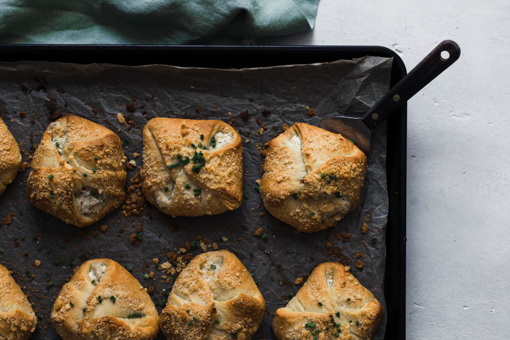

Chicken Packets

Description
"Another once a month meal that's sure to please. My little girl likes these because they pick up easily in her hands! *I revised this recipe based on several folks pointing out that I had made a mistake on the amount of cream cheese. Thank you so much for the input!"
-Excerpt taken from TishT's submission on www.food.com for the recipe.
Ingredients
Yields 8 servings/packets and takes approximately an hour to make this meal, 30 minutes to prep and 30 minutes to cook.
- 2 cups chopped cooked chicken
- 1 (6 - 8 ounce) package cream cheese, softened
- 1 tablespoon chives, chopped
- 2 tablespoons milk
- Salt
- 1/2 cup seasoned croutons, crushed to crumbs
- 2 (8 ounce) packages refrigerated crescent dinner rolls
- 1/4 cup melted margarine
Steps:
- Mix chicken, cream cheese, chives, milk, and salt in a medium bowl (mixing with hands works best) to make filling, and store in a 1 qt freezer bag.
- Put crouton crumbs in another 1 qt bag, attach it to bag of chicken filling, and freeze.
- Refrigerate crescent rolls.
- To prepare for serving, thaw chicken mixture.
- Preheat oven to 350°F.
- Unroll crescent rolls.
- Each tube will contain 4 rectangles of dough with a diagonal perforation.
- Press dough along each perforation so the rectangle halves will not separate.
- Place about 1/4 cup of the chicken mixture into the center of each rectangle.
- Fold dough over the filling, and pinch the edges to seal tightly.
- Dip each packet in melted margarine, and coat with crouton crumbs.
- Place packets on a baking sheet.
- Bake for 20 minutes or until golden brown.
- Packets are good either hot or cold.